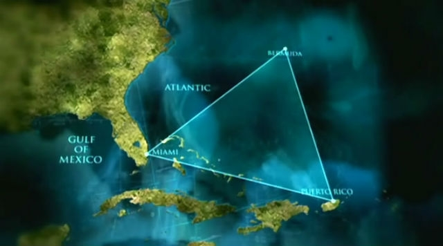
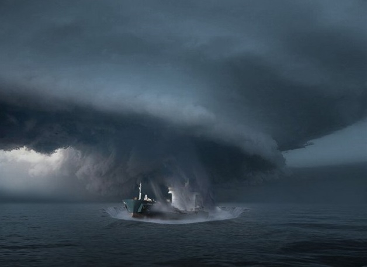

Такі відомі вчені, як Мічіо Каку та Ейнштейн, висували теорії про заломлення
часу. Ейнштейн
говорив про час як про «річку часу».
Мічіо Каку, видатний сучасний вчений світового рівня, висунув теорію, що «річка часу» може закручуватися
сама в себе, і тоді утворюються «вири часу», через які можна входити в інші часи-простори, і що ця «річка
часу» може роздвоюватися. Мічіо Каку стверджує, що існує безліч паралельних світів.
Лі Хунчжі, засновник духовної практики Фалунь Дафа, дає схоже пояснення феномену Бермудського трикутника:
«Хоча існування деяких речей ще не визнається, але вони дійсно вже відбиваються в нашому просторі.
Наприклад, біля Бермудських островів є одне містичне місце, яке люди називають «Бермудським трикутником».
цьому районі зникають деякі кораблі та літаки, а через кілька років вони знову з’являються, і
ніхто не може
пояснити причину цього явища, тому що ніхто не зміг вийти за рамки теорії сучасного людського мислення.

- Насправді, це – прохід в інший простір
- Цей прохід не схожий на двері в нашому звичайному розумінні
- Він проявляється як «неймовірна плутанина».
- Якщо корабель опиняється в цьому місці, коли в такій «плутанині неправильно відчинилися
двері», то корабель легко потрапить в інший простір
- Людина не відчуває цю різницю в просторах і може миттєво увійти туди.
- Але різницю між тим простором-часом і нашим простором-часом неможливо виміряти кілометрами.

Відстань у 108 тисяч лі в цьому місці зовсім незначна. Різні простори-часи існують одночасно в одному і
тому ж місці. Корабель входить туди на хвилиночку, потім знову виходить через «неймовірну плутанину», а в
нашому просторі вже пройшли десятки років, тому що час в цих двох просторах йде по-різному. У кожному
просторі ще існують окремі світи. Це схоже на макет структури атома: кулька з’єднана розгалуженими лініями,
на кінцях яких знову кульки. Все це дуже складно.
За чотири роки до Другої світової війни один льотчик англійської військової авіації, виконуючи завдання,
потрапив у бурю. Як досвідчений пілот, він знайшов старий покинутий аеродром. Підлітаючи до нього, він
раптом побачив зовсім іншу картину: чисте безхмарне небо, ніби потрапив з іншого світу.
На аеродромі всі літаки були забарвлені в жовтий колір, на землі метушилися люди. Йому здалося все це дуже
дивним. Він здійснив посадку, але на нього ніхто не звернув уваги. З командної вежі навіть не зв’язалися з
ним. Він подивився на ясне небо, вирішив полетіти і злетів. Коли він піднявся на таку ж відстань, з якої
знайшов цей аеродром, то знову потрапив у бурю. Нарешті він повернувся на свою базу і доповів командуванню
про все те, що трапилося
стаття